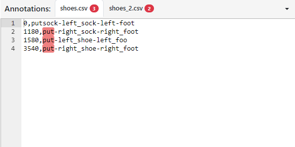
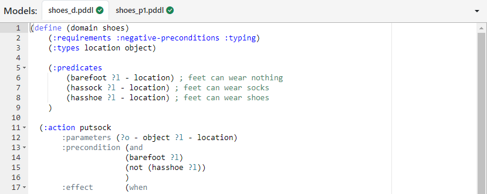
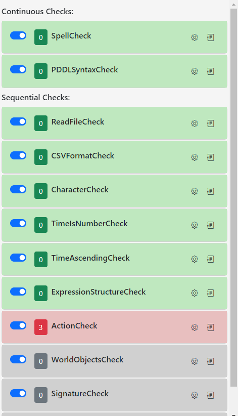
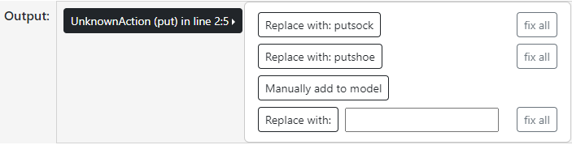

GUI
Navbar

Click on Check to check the annotation. Save will save all changes that were made. Show All displays all errors found for the given annotation and model inside the output window.
Click on Dictionary to open the dictionary.
Dictionary

With the Dictionary you can tell the spell check to include or exclude words. Inside the dictionary, enter a word and click add to add it to the dictionary. Click on words that has been added to select them and click ‘Remove’ to delete them from the dictionary.
Annotation Editor
{kind=link}
Here you can see all open annotations. You can click on the tabs to switch between multiple loaded annotations. The errors that were found during the check are highlighted. Click on them for further information. You will also get advices for fixing the errors if possible. You can select the line limit to have only a certain number of lines checked by clicking on the desired number of lines
Model Editor
{kind=link}
Inside the model window you can view and edit the domain and problem file.
Check Options
{kind=link}
The Checks panel contains information for each check applied to the annotation. The checks are divided into two groups:
Continuous Checksare running everytime you press check.Sequential Checksare executed one after another and if a check throws an error, the checking process will stop. It will move on if all error thrown by the actual checker are fixed.
You can toggle them off to deactivate them during the checking process. The gear button opens the menu for configuring the check. The second button shows the log that is potentially generated during the execution. Click on the colored badge that shows the number of errors found by this check to automatically scroll to the first error found. Green means no errors. Yellow means there are only warnings, but they do not disturb the general process. Red means errors have been found that need to be taken care of.
Output
{kind=link}
The Output window displays all errors found in the clicked section of the annotation. If you click on one, you will get a selection of correction suggestions and information about the error. These are:
- ReplaceSequence:
Replaces the section with a suggestion
- RemoveSequence:
Removes the sequence
- WhitelistSignature:
Saves the signature of an action as the active signature. Same actions, with more or less parameters, are now marked as errors.
- Alert:
Outputs more information about the error.
- AdaptModel:
If you want to adapt the model, for example by adding actions or objects, AdaptModel copies a template to the clipboard, which you can directly take over and adapt afterwards.